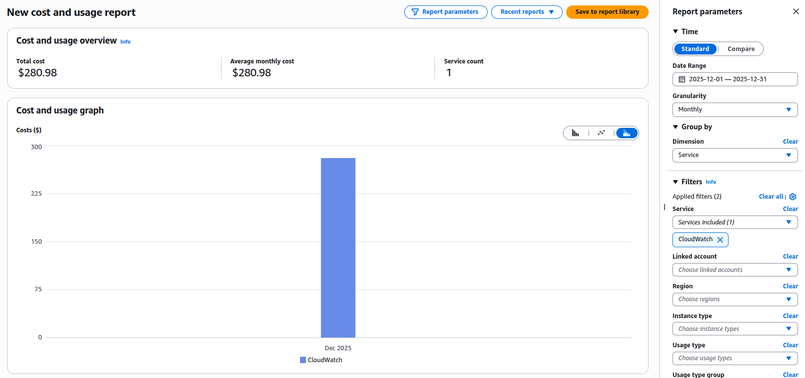
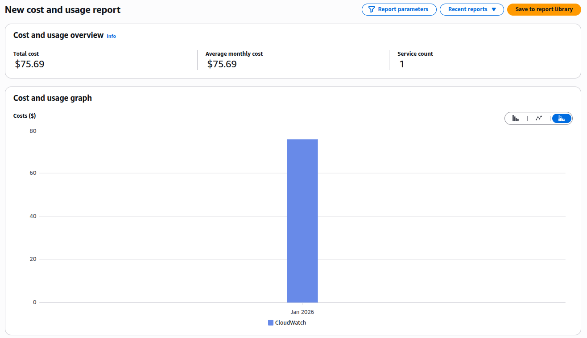

Taming CloudWatch Logs Costs for Legacy EC2 Applications
📋 Table of Contents
- Introduction: The Silent Budget Killer
- Chapter 1: Understanding Your Logging Footprint
- Chapter 2: Intelligent Log Collection with CloudWatch Agent
- Chapter 3: Smart Retention Policies & Archiving
- Chapter 4: Proactive Cost Monitoring & Alerting
- Chapter 5: The Results - Before & After
- Conclusion & Decision Framework
- Resources & Further Reading
Introduction: The Silent Budget Killer
Last month, an AWS Cost Anomaly Detection alert revealed a significant spike in "miscellaneous" CloudWatch costs. Deeper investigation identified the source: logs from a legacy EC2 application that had not been actively maintained for months. The application continued to function correctly, but highly verbose DEBUG logging was silently driving up observability spend.
Teams responsible for legacy applications running on EC2 — especially those that cannot be modified due to compliance, risk, or resource limitations — often face a similar challenge: how to control observability and logging costs without changing existing application code.
🚀 The Challenge
Legacy EC2 applications with unmaintained verbose logging were costing:
In this guide, I'll explain the process used to reduce CloudWatch Logs costs by 73.06% without touching a single line of application code.
Chapter 1: Understanding Your Current Logging Footprint
Before making changes, you need to understand what you're dealing with. Most legacy EC2 applications follow one of these patterns:
- Direct log files: Writing to
/var/log/app/*.logor similar - Syslog: Using rsyslog or syslog-ng
- Application-specific: Custom logging to dedicated directories
Step 1: Find Your Most Expensive Log Groups
First, let's see exactly what's costing you money. In the AWS Cost Explorer:
- Go to Cost Explorer → Filter by Service → CloudWatch
- Add a Tag filter if you have cost allocation tags
- Set the granularity to Daily

Better yet, use the AWS CLI to get programmatic insight:
# Get CloudWatch Logs usage for the last 30 days
aws cloudwatch get-metric-statistics \
--namespace AWS/Logs \
--metric-name IncomingBytes \
--start-time $(date -d "30 days ago" +%Y-%m-%dT%H:%M:%S) \
--end-time $(date +%Y-%m-%dT%H:%M:%S) \
--period 86400 \
--statistics Sum \
--region us-east-1
# List your most active log groups
aws logs describe-log-groups \
--query 'logGroups[*].[logGroupName,storedBytes]' \
--output text | sort -k2 -nr | head -10Step 2: Map Log Files to CloudWatch Log Groups
If you're already using the CloudWatch Agent, identify which log files are being collected:
# Check if CloudWatch Agent is running
sudo systemctl status amazon-cloudwatch-agent
# View the agent configuration
sudo cat /opt/aws/amazon-cloudwatch-agent/etc/amazon-cloudwatch-agent.jsonIf you're not using the agent, examine what's being written:
# Find the largest log files (adjust paths as needed)
sudo find /var/log /opt /app -name "*.log" -type f -exec du -h {} + | sort -rh | head -10
# Check what's being written in real-time
sudo tail -f /var/log/app/application.log | head -100Chapter 2: Strategy 1 - Intelligent Log Collection with CloudWatch Agent
Most legacy applications write different log levels (DEBUG, INFO, ERROR) to the same file. We can't change the application, but we can change what we collect.
🎯 The Smart Collection Strategy
Instead of collecting everything, we'll:
- Collect ERROR logs in real-time (for immediate alerting)
- Sample INFO logs (for context)
- Ignore DEBUG logs entirely (unless troubleshooting)
Here's the complete CloudWatch Agent configuration that made the biggest difference:
{
"logs": {
"logs_collected": {
"files": {
"collect_list": [
{
"file_path": "/var/log/app/application.log",
"log_group_name": "/app/ec2/application-error",
"log_stream_name": "{instance_id}",
"filters": [
{
"type": "include",
"expression": "ERROR|FATAL|CRITICAL",
"case_sensitive": false
}
]
},
{
"file_path": "/var/log/app/application.log",
"log_group_name": "/app/ec2/application-info-sample",
"log_stream_name": "{instance_id}",
"filters": [
{
"type": "include",
"expression": "INFO|WARN",
"case_sensitive": false
}
],
"multi_line_start_pattern": "{datetime_format}",
"sampling": {
"type": "random",
"percent": 20
}
},
{
"file_path": "/var/log/app/access.log",
"log_group_name": "/app/ec2/access",
"log_stream_name": "{instance_id}",
"multi_line_start_pattern": "{datetime_format}"
}
]
}
},
"log_stream_name": "{instance_id}"
}
}Key Configuration Elements Explained:
- Filters: Use regex patterns to separate log levels at collection time
- Sampling: Only 20% of INFO/WARN logs are sent (reduces volume by 80%)
- Multi-line patterns: Crucial for Java stack traces or formatted logs
- Separate log groups: Different retention policies per log level
Deployment Script:
#!/bin/bash
# deploy-cloudwatch-agent.sh
# Stop existing agent
sudo systemctl stop amazon-cloudwatch-agent
# Backup existing config
sudo cp /opt/aws/amazon-cloudwatch-agent/etc/amazon-cloudwatch-agent.json \
/opt/aws/amazon-cloudwatch-agent/etc/amazon-cloudwatch-agent.json.bak
# Install or update agent (if not installed)
if ! command -v amazon-cloudwatch-agent-ctl &> /dev/null; then
wget https://s3.amazonaws.com/amazoncloudwatch-agent/linux/amd64/latest/amazon-cloudwatch-agent.rpm
sudo rpm -U ./amazon-cloudwatch-agent.rpm
fi
# Place our new configuration
sudo cp cloudwatch-agent-config.json /opt/aws/amazon-cloudwatch-agent/etc/amazon-cloudwatch-agent.json
# Start the agent
sudo systemctl start amazon-cloudwatch-agent
# Check status
sudo systemctl status amazon-cloudwatch-agentChapter 3: Strategy 2 - Smart Retention Policies & Archiving
Even with intelligent collection, logs accumulate. For compliance, you might need to keep logs for years—just not in expensive CloudWatch Logs.
Retention Policy Matrix:
| Log Type | CloudWatch Retention | Archive Destination | Compliance Reason |
|---|---|---|---|
| ERROR/FATAL | 90 days | S3 + Glacier (7 years) | Audit requirements |
| INFO/WARN (sampled) | 30 days | S3 (1 year) | Debugging history |
| Access Logs | 30 days | S3 (3 years) | Security audits |
| DEBUG | 0 days (not collected) | N/A | Cost optimization |
Implementing Retention Policies:
#!/bin/bash
# set-retention-policies.sh
# Set retention on existing log groups
LOG_GROUPS=$(aws logs describe-log-groups --query 'logGroups[*].logGroupName' --output text)
for group in $LOG_GROUPS; do
if [[ $group == *"error"* ]]; then
aws logs put-retention-policy --log-group-name "$group" --retention-in-days 90
echo "Set 90-day retention for: $group"
elif [[ $group == *"info"* ]]; then
aws logs put-retention-policy --log-group-name "$group" --retention-in-days 30
echo "Set 30-day retention for: $group"
else
aws logs put-retention-policy --log-group-name "$group" --retention-in-days 30
echo "Set default 30-day retention for: $group"
fi
doneArchiving to S3/Glacier:
For logs that need long-term retention, set up automatic archiving:
# archive-logs.yaml - CloudFormation template snippet
Resources:
LogArchiveBucket:
Type: AWS::S3::Bucket
Properties:
BucketName: !Sub "${AWS::AccountId}-log-archive"
LifecycleConfiguration:
Rules:
- Id: GlacierTransition
Status: Enabled
Transitions:
- TransitionInDays: 90
StorageClass: GLACIER
Prefix: "cloudwatch-logs/"Chapter 4: Strategy 3 - Proactive Cost Monitoring & Alerting
Don't wait for the monthly bill. Set up proactive monitoring.
AWS Budgets for CloudWatch Logs:
# Create a monthly budget with alerts
aws budgets create-budget \
--account-id $(aws sts get-caller-identity --query Account --output text) \
--budget "{
\"BudgetName\": \"CloudWatch-Logs-Monthly\",
\"BudgetLimit\": {\"Amount\": \"100\", \"Unit\": \"USD\"},
\"CostFilters\": {\"Service\": [\"AmazonCloudWatch\"]},
\"CostTypes\": {\"IncludeSubscription\": true, \"UseBlended\": false},
\"TimeUnit\": \"MONTHLY\",
\"BudgetType\": \"COST\"
}" \
--notifications-with-subscribers "[
{
\"Notification\": {
\"NotificationType\": \"ACTUAL\",
\"ComparisonOperator\": \"GREATER_THAN\",
\"Threshold\": 80,
\"ThresholdType\": \"PERCENTAGE\"
},
\"Subscribers\": [{\"SubscriptionType\": \"EMAIL\", \"Address\": \"alerts@yourcompany.com\"}]
}
]"Real-time Alerting with Lambda and Slack:
# cost_alert_lambda.py
import boto3
import json
import os
from datetime import datetime, timedelta
cloudwatch = boto3.client('cloudwatch')
logs = boto3.client('logs')
def lambda_handler(event, context):
# Get CloudWatch Logs metric for last 24 hours
response = cloudwatch.get_metric_statistics(
Namespace='AWS/Logs',
MetricName='IncomingBytes',
StartTime=datetime.utcnow() - timedelta(hours=24),
EndTime=datetime.utcnow(),
Period=86400,
Statistics=['Sum'],
Unit='Bytes'
)
bytes_today = response['Datapoints'][0]['Sum'] if response['Datapoints'] else 0
gb_today = bytes_today / (1024**3)
# Calculate estimated cost (first 10GB free, then $0.50/GB)
free_tier_gb = 10
cost_per_gb = 0.50
if gb_today > free_tier_gb:
estimated_cost = (gb_today - free_tier_gb) * cost_per_gb
else:
estimated_cost = 0
# Send to Slack if over threshold
if estimated_cost > 50: # $50 daily threshold
slack_message = {
"text": f"CloudWatch Logs Cost Alert",
"blocks": [
{
"type": "section",
"text": {
"type": "mrkdwn",
"text": f"*CloudWatch Logs Cost Alert*\nEstimated daily cost: ${estimated_cost:.2f}\nData ingested: {gb_today:.2f} GB"
}
},
{
"type": "section",
"text": {
"type": "mrkdwn",
"text": f"*Top Log Groups:*\n{get_top_log_groups()}"
}
}
]
}
# Post to Slack webhook
# ... (Slack integration code)
return {"statusCode": 200}
def get_top_log_groups():
response = logs.describe_log_groups(
limit=5,
orderBy='LastEventTime',
descending=True
)
top_groups = []
for group in response['logGroups']:
gb_size = group.get('storedBytes', 0) / (1024**3)
top_groups.append(f"• {group['logGroupName']}: {gb_size:.2f} GB")
return "\n".join(top_groups)Chapter 5: The Results - Before & After
After implementing these strategies over two weeks, here's what we achieved:
📊 Results Summary
Cost Comparison:
| Metric | Before | After | Reduction |
|---|---|---|---|
| Monthly CloudWatch Logs Cost | $280.98/month | $75.69/month | 73.06% |
| Data Ingested Daily | 85 GB/day | 23 GB/day | 73% |
| Retention Period | Unlimited | Tiered (30/90 days) | Optimized |
| Alert Response Time | End of month | Real-time | 30 days faster |
Architecture Evolution:
Before Architecture:
EC2 Application
↓
All Logs (DEBUG, INFO, ERROR)
↓
CloudWatch Logs (Unlimited Retention)
↓
$$$$$ (Growing Monthly Bill)After Architecture:
EC2 Application
↓
CloudWatch Agent (Intelligent Filtering)
├─ ERROR Logs → CloudWatch (90d) → S3 → Glacier (7y)
├─ INFO Logs (20% sample) → CloudWatch (30d) → S3 (1y)
└─ DEBUG Logs → /dev/null
↓
Controlled Costs + ComplianceConclusion & Decision Framework
Controlling CloudWatch Logs costs for legacy applications isn't about perfection, it's about pragmatic improvements. Here's your decision framework:
🔍 Decision Framework
START: Analyze CloudWatch Logs costs
↓
IF cost > $200/month AND application can't be modified:
│
├─▶ Implement CloudWatch Agent filtering (Strategy 1)
│ └─▶ Expected reduction: 40-60%
│
├─▶ Apply retention policies (Strategy 2)
│ └─▶ Expected reduction: Additional 20-30%
│
└─▶ Set up cost monitoring (Strategy 3)
└─▶ Prevent future surprises
↓
ELSE IF cost < $50/month:
│
└─▶ Monitor only - optimization effort > savings
↓
END: Review quarterlyKey Takeaways:
- You don't need to modify applications to significantly reduce log costs
- Filtering at the agent level is your most powerful tool
- Tiered retention balances cost with compliance needs
- Proactive monitoring prevents budget surprises
- Document everything — especially for auditors questioning reduced logging
Next Steps:
- This week: Run the cost analysis commands to identify your top log groups
- Next week: Implement the CloudWatch Agent configuration for one non-critical application
- Within a month: Set up budgets and anomaly detection for your entire AWS account
Resources & Further Reading
AWS Documentation:
Open Source Tools:
- Fluent Bit - Alternative lightweight log processor
- Grafana Loki - Cost-effective log aggregation